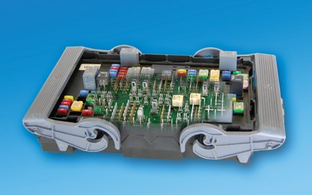
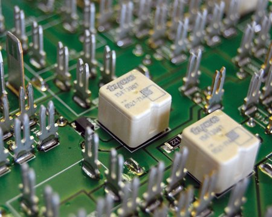
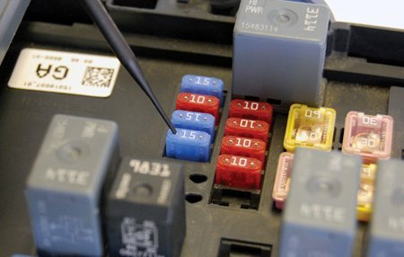
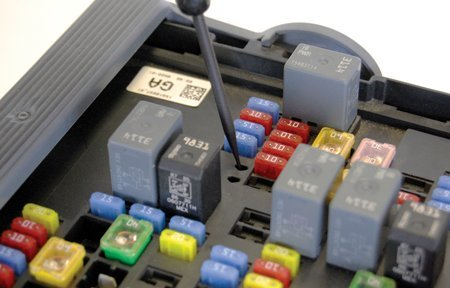
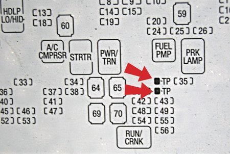

Printed Circuit Board (PCB) Relay Testing
PRINTED CIRCUIT BOARD (PCB) RELAY TESTING

Many electrical centers (also called Bussed Electrical Centers or BECs) use Printed Circuit Board (PCB) relays.

The PCB relay is integrally soldered to the printed circuit board; it is not plugged in.
Printed circuit board (PCB) relays are an integral part of the bussed electrical center or fuse block and cannot be repaired or replaced.
If any PCB relay needs to be repaired or replaced the bussed electrical center or fuse block must be replaced.
PCB relays can be identified using the fuse block label on most vehicles.
Because the PCB relay is compact, it helps electrical engineers reduce the size and mass of the Bussed Electrical Center.
In the past, you could either feel or hear the "click" of an older style relay, as you operated the circuit it was controlling. You could often use a scan tool or operate the circuit to verify that the relay was operating.
Due to the location and size of the PCB relays, it may not be possible to hear or feel them operate, so another method has been developed to diagnose them.
The component technical specification (CTS) of the Bussed Electrical Center requires that if a fuse is used with a relay, the fuse must be downstream of the switched contacts of the relay.

Depending on the operation of the circuit, the relay contacts will open or close, and voltage will be either present or not present at the fuse. A test lamp can be used to verify this change by touching the small metal portion on top of the fuse.

If the circuit is protected in some way other than with a fuse, a test point is placed in the BEC for use with a test lamp.

The test point is called out on the Bussed Electrical Center cover. Test procedures are written to use either the fuse or test point as a diagnostic location.
TIP: If necessary, carefully move the test lamp probe around in the opening to get a good connection with the test point.
TIP: Using the prescribed fuse or test point as a diagnostic location, it is possible to diagnose the operation of PCB relays without removing the Bussed Electrical Center from its mounting place.